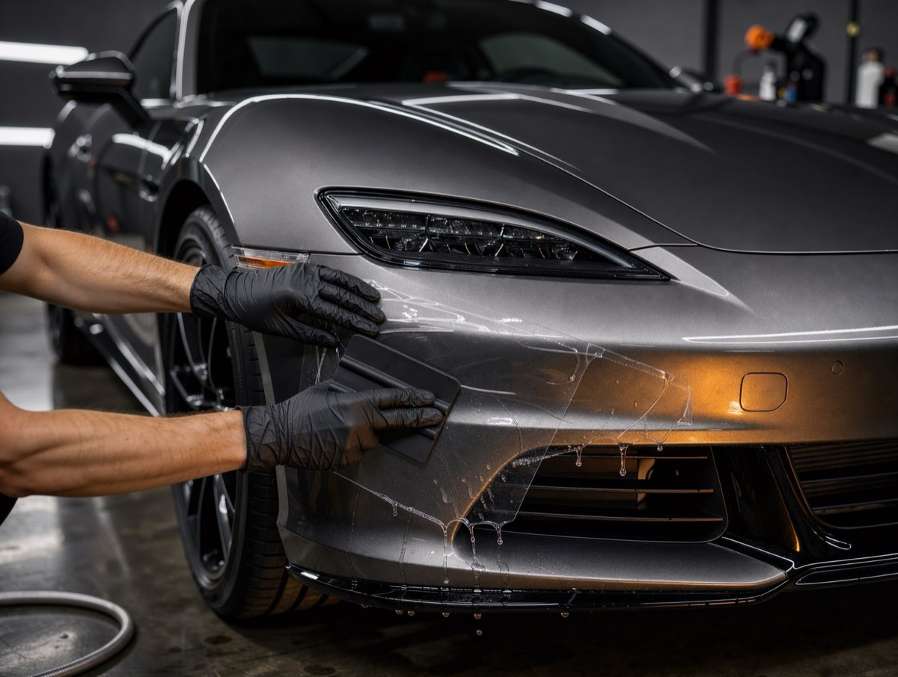

Kamień trafia w folię
Typowe uderzenia z trasy zatrzymują się na folii, zamiast zostawiać odpryski do podkładu.
Dla kierowców, którzy dużo jeżdżą autostradą albo właśnie odebrali nowe auto i chcą zachować oryginalny lakier. Przezroczysta folia przyjmuje uderzenia kamieni, zanim dotrą do lakieru.

Folia PPF to elastyczna, przezroczysta warstwa poliuretanu. Bierze na siebie uderzenia i otarcia, a gdy kiedyś ją zdejmiemy, pod spodem jest lakier z fabryki.
Typowe uderzenia z trasy zatrzymują się na folii, zamiast zostawiać odpryski do podkładu.
Górna warstwa folii wygładza płytkie zarysowania pod wpływem ciepła słońca lub ciepłej wody.
Krawędzie zawijamy pod elementy tam, gdzie to możliwe. Z dwóch metrów nikt nie zgadnie, że auto jest oklejone.
Kupujący zmierzy lakier i zobaczy fabryczne wartości. Pomiary dokumentujemy w raporcie.
Folia błyszcząca podkreśla lakier, satynowa daje efekt matu bez lakierowania auta.
Folię można dodatkowo zabezpieczyć ceramiką, żeby brud i owady schodziły szybciej.
Oklejamy tam, gdzie kamienie, owady i buty niszczą lakier najszybciej. Lupy pokazują te miejsca z bliska.
Płytkie zarysowania na folii znikają w słońcu albo pod ciepłą wodą.
To pierwsze miejsce, w które trafiają kamienie z trasy. Folia przyjmuje uderzenie.
Obudowy lusterek i progi chronimy przed otarciami od butów, toreb i ciasnych parkingów.
Przewiń, żeby rozłożyć ochronę na części. Tak wygląda przekrój maski po montażu folii.
Ustalamy, które elementy oklejamy: sam przód, przód z błotnikami i lusterkami albo całe auto. Mierzymy lakier i robimy zdjęcia.
Myjemy auto, usuwamy osady i robimy lekką korektę. Folia przyklei się do tego, co jest pod nią, więc lakier musi być czysty i gładki.
Docinamy folię pod Twój model i nakładamy ją element po elemencie, zawijając krawędzie. Tam, gdzie trzeba, zdejmujemy emblematy i lampy.
Sprawdzamy krawędzie i pęcherzyki pod lampą. Przy odbiorze pokazujemy każdy element i przekazujemy plan pielęgnacji.
Nowe auto, codzienna trasa autostradą. Zobacz więcej realizacji

„Dużo jeżdżę autostradą. Po roku przód wygląda jak w salonie, a folii w ogóle nie widać. Do tego dostawałam zdjęcia z każdego dnia pracy.”
Cena zależy od zakresu (sam przód czy całe auto), wielkości auta i liczby elementów do demontażu. Podajemy jedną kwotę po krótkiej rozmowie lub oględzinach.
Przy poprawnym montażu folia jest praktycznie niewidoczna. Krawędzie zawijamy pod elementy, a tam, gdzie się nie da, prowadzimy je wzdłuż linii nadwozia.
Trwałość zależy od eksploatacji i pielęgnacji: przebiegu, garażowania, sposobu mycia. Nie podajemy liczby lat jako pewnika. Po oględzinach powiemy, czego się spodziewać, a co rok sprawdzamy krawędzie.
Na lakierze fabrycznym w dobrym stanie folię zdejmujemy bez śladu. Inaczej bywa przy lakierze po naprawie blacharskiej, dlatego mierzymy lakier przed montażem i mówimy o ryzyku.
Sam przód zwykle 2 do 3 dni, całe auto około 5 dni, razem z przygotowaniem lakieru.
Powiedz, ile i gdzie jeździsz. Zaproponujemy zakres, który ma sens, a nie największy możliwy.
Oddzwaniamy w ciągu 2 godzin roboczych z widełkami ceny i wolnym terminem.